Devlog
Day 1 · Thu Nov 12
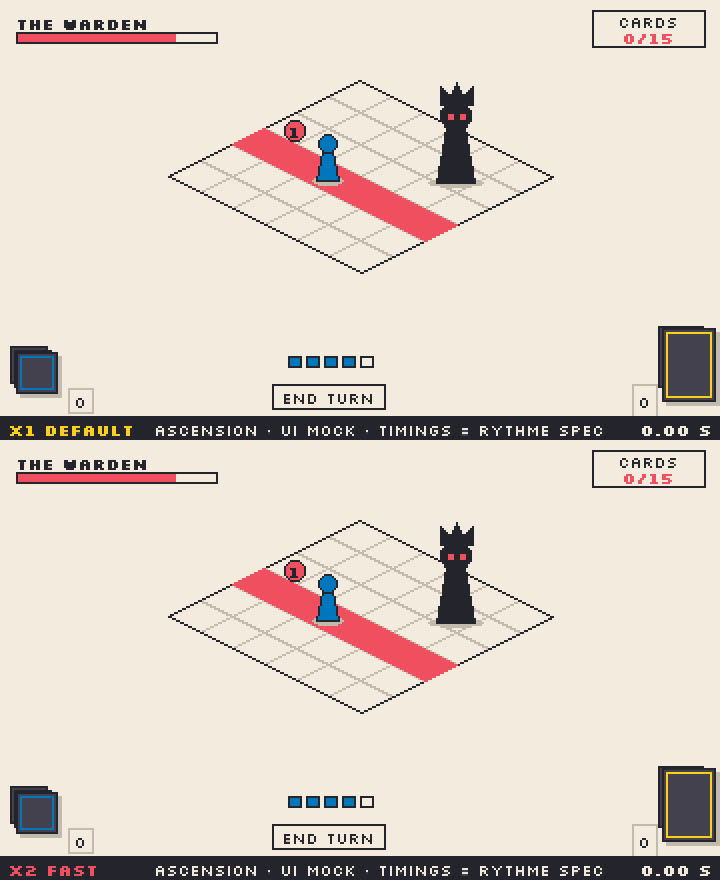
Day 1 morning: a shelved idea, reopenedMorningDay 1, early morning: from grey box to ink08:15 (Paris)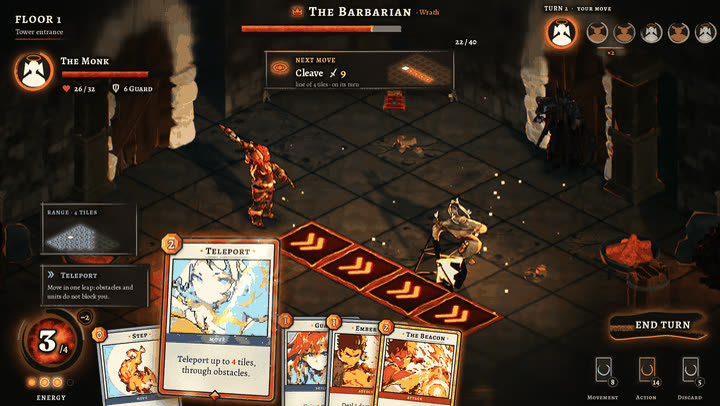
Day 1, afternoon: the first act runs15:16 (Paris)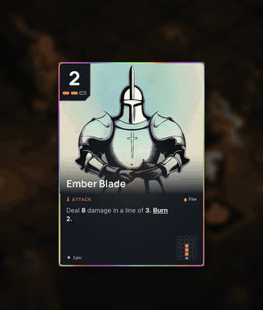
Day 1, late afternoon: a style is a sum of refusals16:14 (Paris)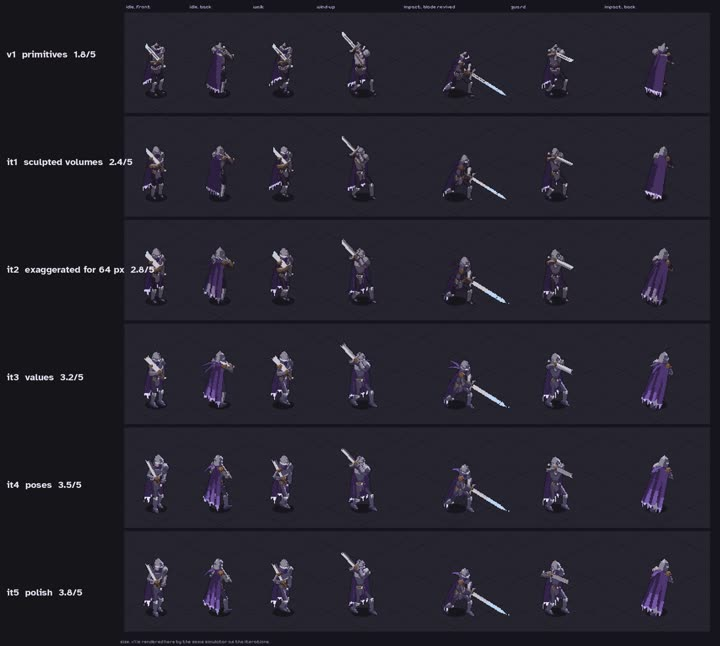
Day 1, evening: one hero, five passes17:50 (Paris)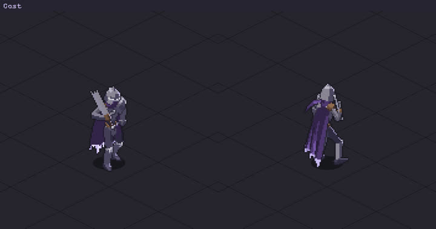
Day 1, night: the knight starts acting19:17 (Paris)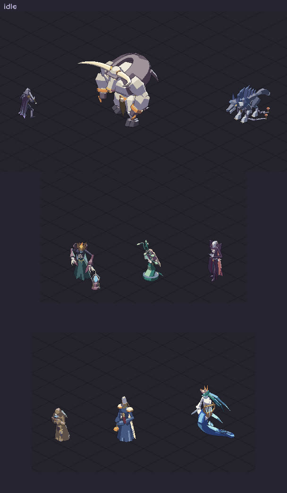
Day 1, late night: the tower fills up21:11 (Paris)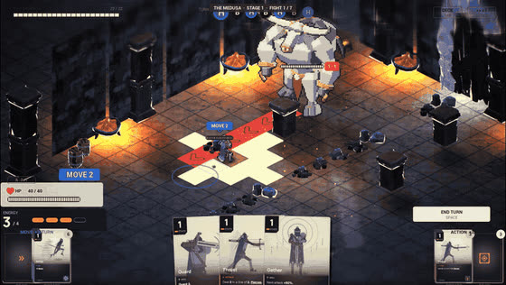
Day 1, night: the first dressed room22:05 (Paris)Day 2 · Fri Nov 13
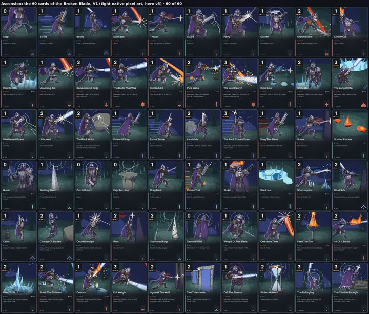
Sixty cards overnight, then a change of course05:40 (Paris)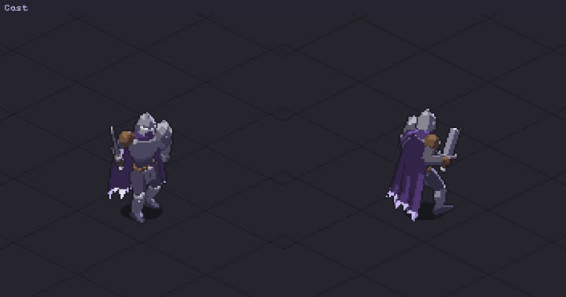
The hero's sword went through his arm05:41 (Paris)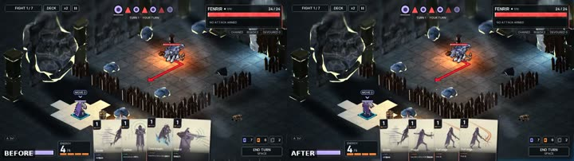
Game feel: the boss now takes a breath05:42 (Paris)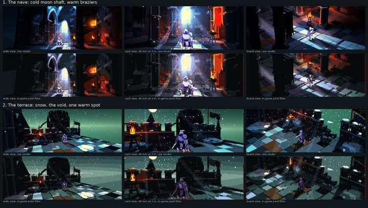
We turned the heavy lighting back on06:21 (Paris)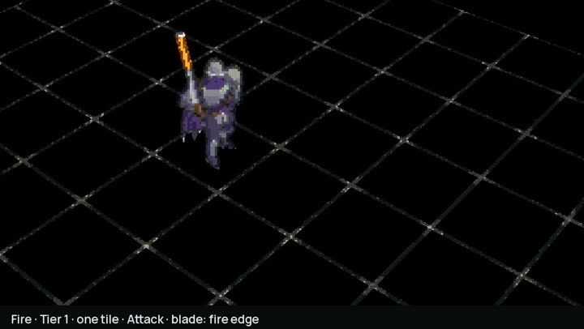
From a skill to its card, in one loop08:29 (Paris)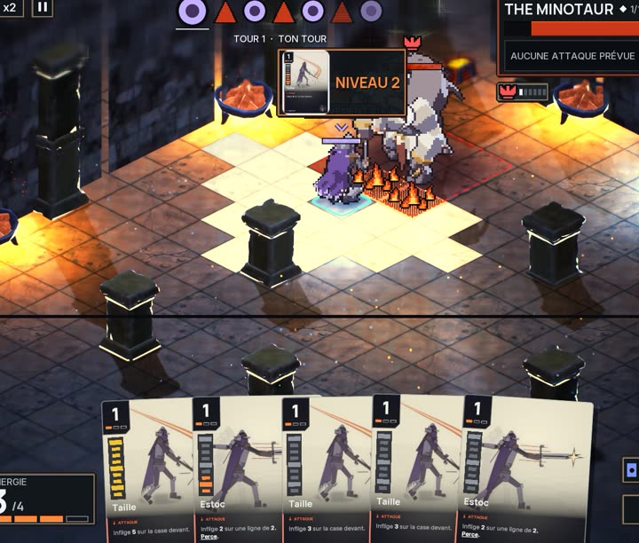
One card, one technique, and it grows with use13:10 (Paris)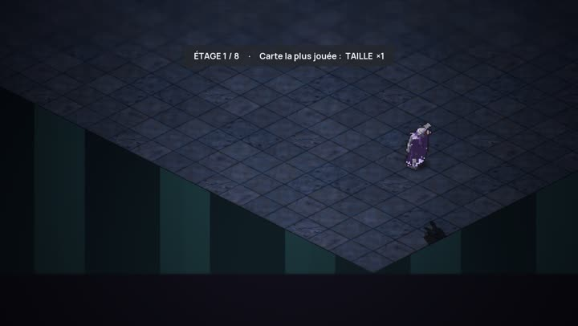
Dying is part of the climb13:40 (Paris)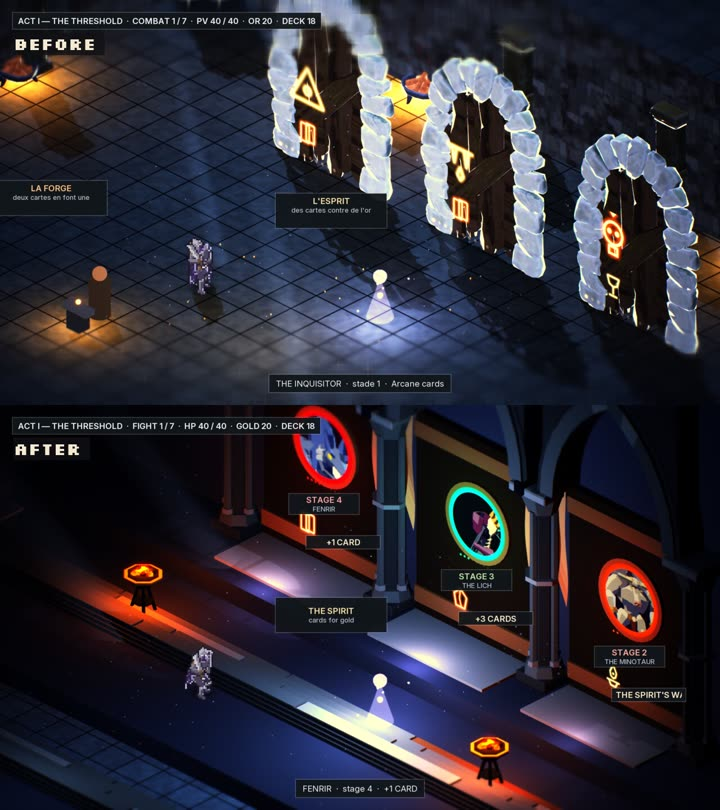
The door hall, rebuilt15:25 (Paris)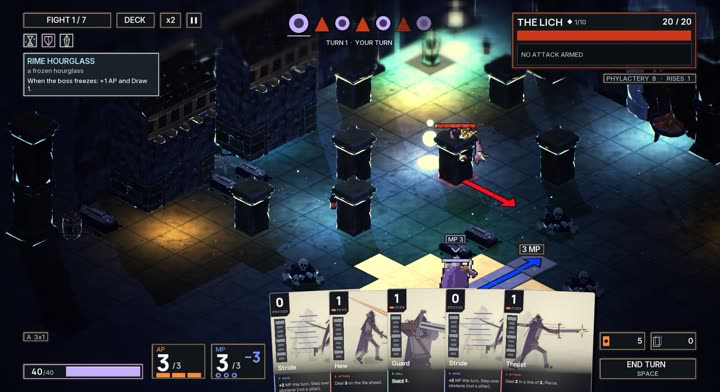
One deck, action points and movement points15:30 (Paris)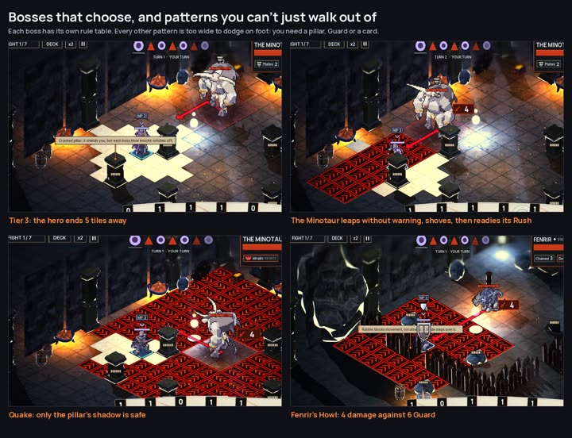
Bosses that think, and a new one with six heads16:40 (Paris)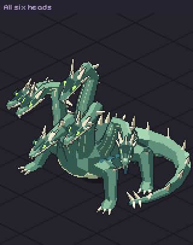
The Hydra17:30 (Paris)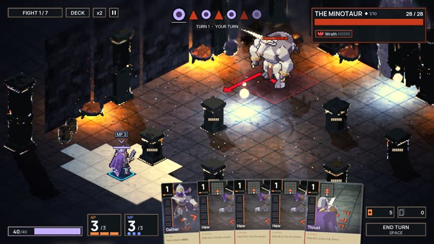
57 cards, shot inside the game18:35 (Paris)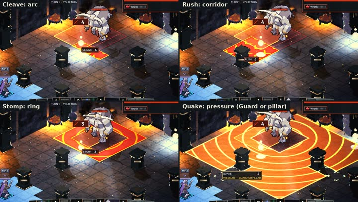
Attacks you can read before they land19:20 (Paris)Every boss makes an entrance21:18 (Paris)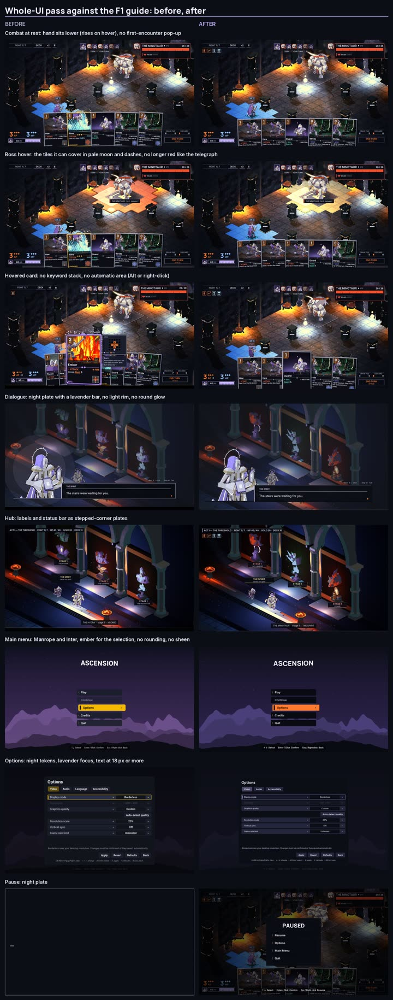
One look for every screen23:18 (Paris)Day 3 · Sat Nov 14
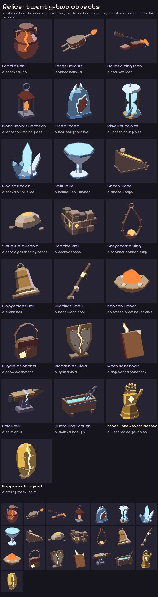
Twenty-two relics, twenty-two objects01:18 (Paris)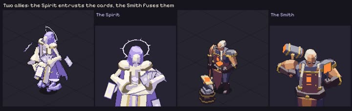
Two allies in the tower03:18 (Paris)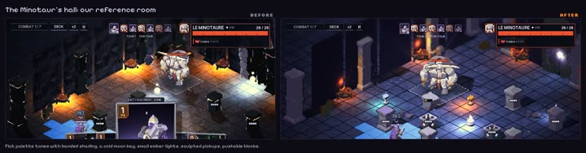
One room sets the bar05:18 (Paris)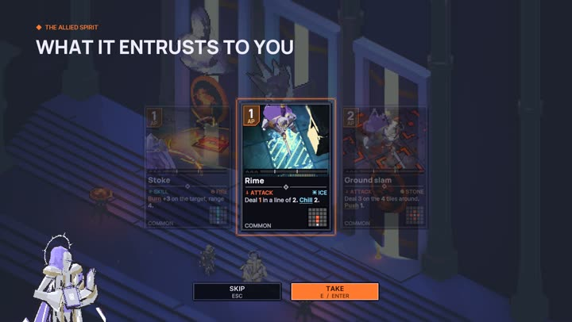
One card out of three07:18 (Paris)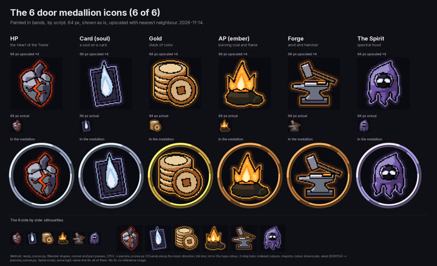
Six signs on the doors09:18 (Paris)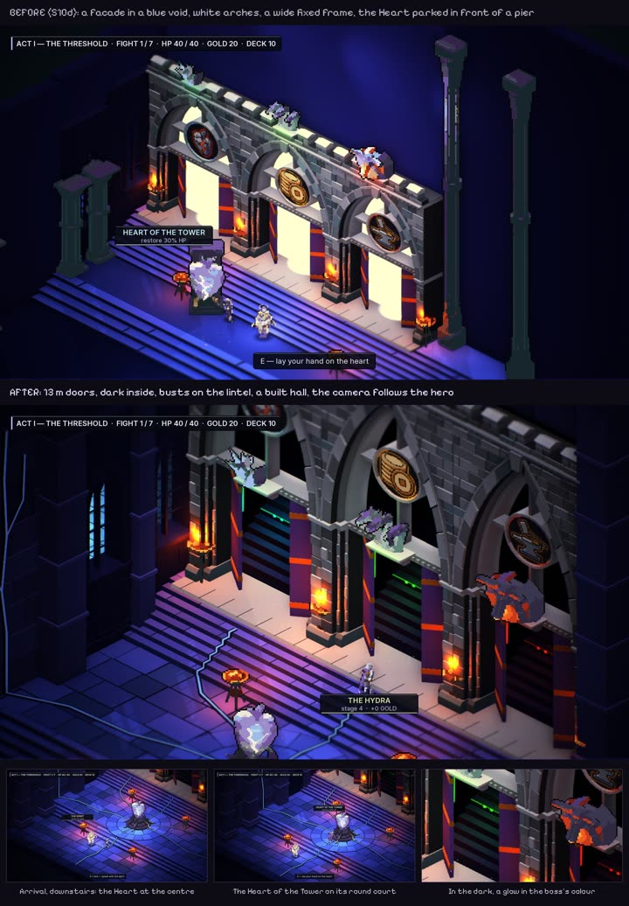
The hall of the Heart11:18 (Paris)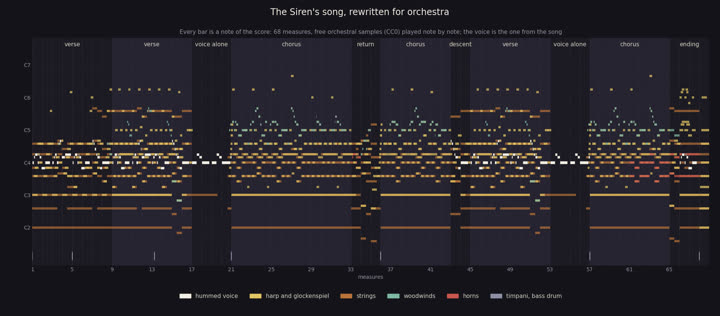
The Siren's song, without words12:52 (Paris)